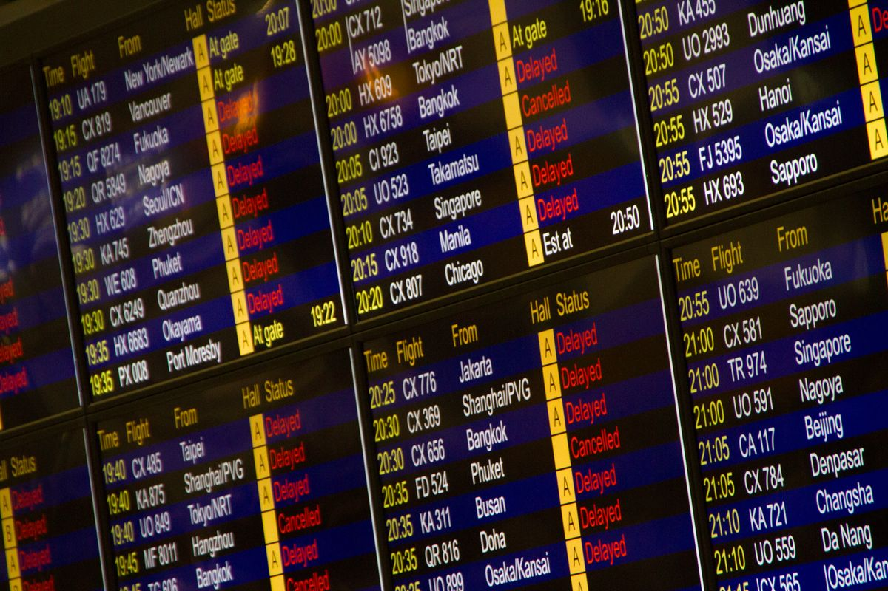
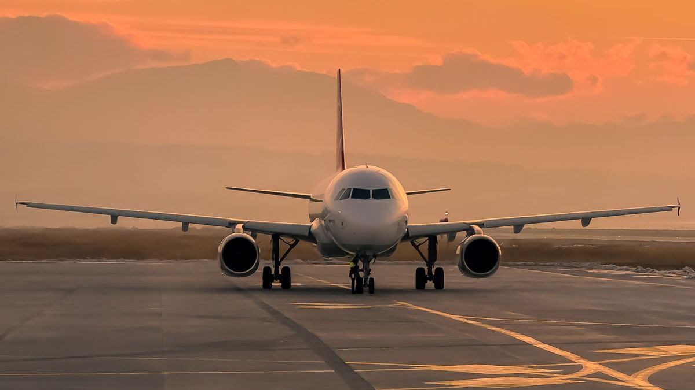
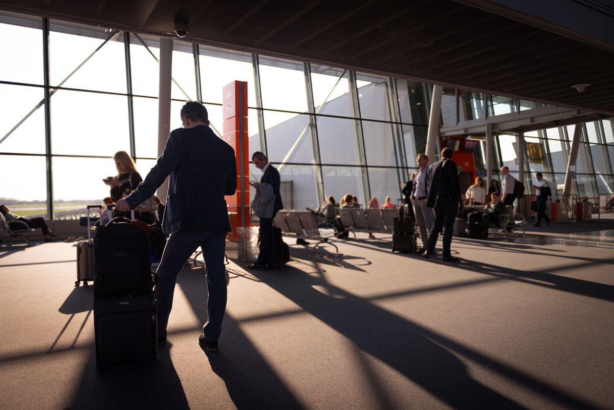

FAA trending karena otoritas penerbangan Amerika Serikat itu menghentikan semua penerbangan berangkat di seluruh Amerika pada Jumat, 13 November 2026. Penyebabnya gangguan komunikasi di pusat kendali lalu lintas udara. Penghentian ini dicabut setelah sekitar empat jam, tapi ribuan penerbangan sudah telanjur tertunda dan dibatalkan.
Pada Jumat sore waktu Amerika, FAA mengeluarkan perintah ground stop nasional: semua pesawat di bandara Amerika dilarang berangkat, sementara yang sudah di udara tetap boleh mendarat. Perintah itu dicabut sekitar empat jam kemudian. FAA menyebut penyebabnya gangguan telekomunikasi yang memengaruhi semua pusat kendali regional. Menteri Transportasi Sean Duffy menyalahkan sistem lama yang kelebihan beban data, sementara Menteri Keamanan Dalam Negeri Markwayne Mullin menegaskan tidak ada bukti serangan siber. Penerbangan internasional ditangani satu per satu, dan jadwal diprediksi masih berantakan sampai akhir pekan. Ini baru kedua kalinya sejak 11 September 2001 seluruh penerbangan berangkat di Amerika dihentikan serentak.
Apa itu FAA dan apa artinya ground stop?
FAA adalah singkatan dari Federal Aviation Administration, lembaga pemerintah Amerika Serikat yang mengatur penerbangan sipil di sana. Kamu bisa membayangkannya seperti otoritas bandara dan lalu lintas udara untuk seluruh Amerika. Kalau FAA bilang berhenti, semua bandara di Amerika ikut berhenti.
Ground stop bukan berarti ruang udara Amerika ditutup. Artinya, pesawat yang masih di darat dilarang berangkat sampai ada perintah lanjut. Pesawat yang sudah terbang tetap boleh mendarat seperti biasa. Penerbangan internasional yang menuju Amerika ditangani satu per satu, bukan langsung ditolak semua. Karena itu, efeknya terasa paling besar di penerbangan domestik Amerika, tapi penumpang internasional juga ikut kena imbas jadwal yang berantakan.

Kenapa semua penerbangan AS bisa berhenti sekaligus?
Penyebab langsungnya adalah gangguan komunikasi di Air Route Traffic Control Centers, pusat kendali regional yang mengatur pesawat di ketinggian. Ketika pusat-pusat ini tidak bisa bertukar data radar secara konsisten, pengendali tidak bisa memastikan posisi pesawat dengan aman. FAA memilih menghentikan keberangkatan sebagai langkah pengamanan. Perintah itu dikeluarkan sekitar pukul 15.53 waktu timur Amerika, atau Sabtu dini hari pukul 03.53 WIB, dan dicabut sekitar pukul 20.15 waktu timur, atau 08.15 WIB. Terakhir kali sebesar ini terjadi pada Januari 2023, ketika gangguan sistem NOTAM, sistem yang memberi tahu pilot soal bahaya penerbangan, membuat semua penerbangan domestik berhenti kurang dari dua jam.
Menteri Transportasi Sean Duffy menyalahkan sistem lama. Katanya, saklar dan router yang dipakai sudah tua, dan sebagian masih memakai kabel tembaga dari era 1980-an. Sistem itu kelebihan beban data sampai akhirnya tumbang di banyak tempat sekaligus. Duffy juga mengakui belum ada jawaban pasti kenapa beban itu melonjak di hari yang sebenarnya normal. Dalam pengarahan di Gedung Putih, ia menaikkan permintaan dananya jadi 50 miliar dolar AS untuk memodernisasi sistem kendali lalu lintas udara. Penyebab pasti kelebihan beban itu masih diselidiki sampai artikel ini ditulis.

Benarkah ini serangan siber?
Jawabannya, sejauh ini tidak ada bukti ke arah itu. Menteri Keamanan Dalam Negeri Markwayne Mullin menegaskan tidak ada bukti serangan siber dalam kejadian ini. Ia menyebutnya gangguan telekomunikasi. Mullin juga menambahkan bahwa penyelidikan tetap berjalan dan belum ada kepastian penuh.
Rumor sempat beredar karena FAA baru saja mulai memakai alat bantu berbasis AI bernama SMART untuk mengatur lalu lintas udara. Perusahaan pembuat alat itu, Air Space Intelligence, sudah membantah keterkaitannya. Microsoft juga membantah ada kaitan antara ground stop ini dan layanannya seperti Outlook dan Teams. Intinya, ini masalah peralatan tua yang kelebihan beban, bukan serangan dari luar. Penyelidikan resminya tetap berjalan untuk memastikan penyebab pastinya.
Apa artinya buat kamu yang mau terbang ke AS?
Pertama, tenang dulu: ground stop-nya sudah dicabut. Penerbangan sudah jalan lagi sejak Jumat malam waktu Amerika, atau Sabtu pagi WIB. Tapi pejabat AS memperingatkan jadwal masih bisa berantakan sampai akhir pekan, karena pesawat dan awak yang telanjur berpindah posisi butuh waktu untuk kembali ke jadwal normal. Duffy bahkan menyebut pemulihannya bisa memakan waktu berhari-hari. Sampai pukul 21.00 waktu timur, FlightAware mencatat lebih dari 8.000 penerbangan tertunda dan 7.000 dibatalkan di Amerika.
Kedua, kalau kamu punya penerbangan ke Amerika dalam beberapa hari ke depan, cek status penerbanganmu sebelum berangkat ke bandara. Cek di aplikasi maskapai atau situs pelacak penerbangan seperti FlightAware. Penerbangan dari Indonesia ke Amerika biasanya transit, jadi perhatikan juga status penerbangan lanjutanmu di bandara transit.
Ketiga, kalau penerbanganmu dibatalkan, hubungi maskapaimu untuk penjadwalan ulang atau pengembalian dana. Simpan semua bukti, mulai dari surel pembatalan sampai struk pengeluaran tambahan. Kalau kamu berangkat dalam waktu dekat, siapkan rencana cadangan, misalnya jadwal penerbangan alternatif di hari yang sama.

FAA trending karena kejadian langka: seluruh penerbangan berangkat di Amerika berhenti sekitar empat jam gara-gara sistem komunikasi yang kelebihan beban. Sudah dicabut, bukan serangan, tapi jadwal masih berantakan sampai akhir pekan. Kalau kamu mau terbang ke Amerika, cek status penerbanganmu dulu sebelum berangkat. Per November 2026.
Baca juga: Cara Membuat Paspor Online Lewat M-Paspor, dari Daftar sampai Ambil, Cara Beli Tiket Kereta Diskon 30 Persen buat Libur Nataru 2026/2027, Pemesanan Dibuka 7 November, dan Cara Membuat KTP Digital (IKD) 2026 Lewat HP, dari Daftar sampai Aktivasi. Kamu juga bisa melihat kumpulan artikel Other dan artikel riset di blog.
Sumber dan Info Resmi
Fakta dan langkah di artikel ini merujuk ke sumber berikut:
- WAMC / NPR: ground stop sekitar empat jam; kutipan Duffy soal saklar, router tua, kabel tembaga era 1980-an yang kelebihan beban; Mullin menyatakan tidak ada bukti serangan siber; FlightAware mencatat lebih dari 8.000 penerbangan tertunda dan 7.000 dibatalkan sampai pukul 21.00 waktu timur; terakhir kali sebesar ini Januari 2023 karena gangguan sistem NOTAM.
- Reuters: pesawat di udara boleh mendarat, yang di darat dilarang berangkat; penerbangan internasional ditangani satu per satu; kejadian sebesar ini kedua kalinya sejak 11 September 2001.
- Rival: FAA jadi pencarian teratas Google Trends Indonesia pada Sabtu pagi 14 November 2026; tahap awal sekitar 7.000 penerbangan tertunda atau dibatalkan lalu membengkak.
- Tautak: perintah sekitar pukul 15.53 waktu timur Amerika, dicabut sekitar pukul 20.15 waktu timur; durasi sekitar 4 jam 20 menit.
- Telset: Duffy meminta dana 50 miliar dolar AS untuk modernisasi sistem kendali lalu lintas udara; SMART berbasis AI dan Microsoft membantah keterkaitan dengan insiden; Duffy memperkirakan pemulihan butuh berhari-hari.
- The Tennessean: Duffy dan Mullin memperingatkan jadwal penerbangan masih terganggu sampai akhir pekan.